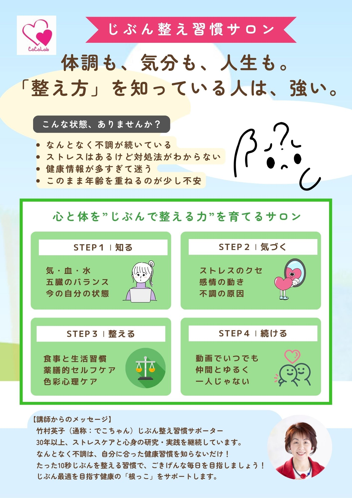

体の揺らぎ
なんとなく不調が続く、疲れが抜けにくい、生活のリズムが乱れやすい。

前より疲れが抜けにくい。気持ちがゆらぎやすい。ちゃんとしたいのに整わない。そんな変化を感じ始めた方へ。
なんとなく不調が続く、疲れが抜けにくい、生活のリズムが乱れやすい。
ストレスはあるけれど対処法がわからない。気分の安定感が前より落ちた。
健康情報が多すぎて迷う。このまま年齢を重ねるのが少し不安になる。
気合いや我慢だけでは続かないからこそ、今の自分に合う整え方を持つことが大切です。
少しずつでも続けられる習慣が、毎日の安心につながっていきます。
つらくなってから対処するのではなく、毎日の中で少しずつ自分を整えていくための考え方です。
竹村英子は、心身の状態をひとつに決めつけず、暮らし全体から整え方を見つけていきます。
体の声に気づき、無理の少ない整え方を見つけます。
食べ方や日々のリズムから、暮らしを整えていきます。
感覚や気持ちの動きも含めて、自分らしい整え方につなげます。
無料診断では、今の状態をやさしく見直しながら、次の一歩を考えるきっかけをつくります。
診断のあと、いきなり申込を急がせることはありません。理解を深めながら、必要に応じて無料相談やサロン参加をご案内します。
体養生・食養生・色養生を軸にした動画101本を通じて、毎日の中で続けやすい整え方を学べる場です。

大きな変化を急がず、今の自分に合う形で取り入れられることが、じぶん整え習慣の大切な特徴です。
個人の心身の揺らぎにも、長年向き合ってきた経験をもとに、押しつけのない伴走を大切にしています。
気になる方は無料診断へ。もう少し相談してから考えたい方には、無料相談もご用意する前提で設計しています。